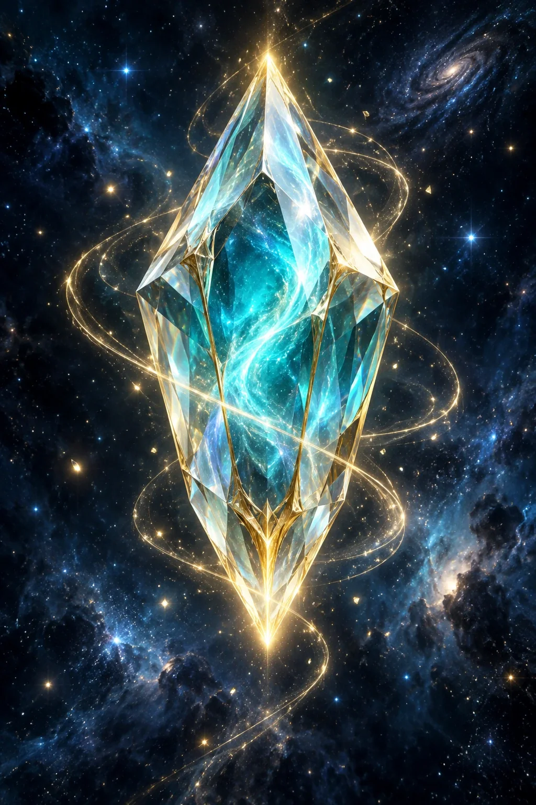

Sランク 3% · 森7種合計 約4.198%通常枠の提供割合
無料・回数制限なし
SUMMON LINEUP
七つの階級、五十七の出会い。
右上のスピーカーでボイス・効果音をON。セリフは端末の日本語合成音声で再生します。
ANOTHER SUMMON · CRYSTAL COLLECTION
海を越える、一枚。
英語でめぐる46の大学。水晶を集めて、カルフォルニア大学の殿堂レアへ。

所持水晶0OPEN YOUR NEXT CHAPTER
指で裂いて、
一枚ずつ出会う。
1パック5枠。大学46種・通常写真レア3種・水晶が、1枠ごとに各2%で出現。
無料 · 5分で1回分回復 · 最大20回分ストック
1パック開封で1回分消費 · ランク保証なし
CRYSTAL EXCHANGE · HALL OF FAME
水晶を、伝説の一枚に。
水晶パックの提供割合・交換ルール
1枠ごとに50種類から均等に抽選します。大学カード1種類につき2%、通常写真レア1種類につき2%、水晶1個が2%。同じパック内で重複することがあります。
ボーリーとkeigoの殿堂レアはそれぞれ水晶2個、2人の殿堂レアは水晶4個で交換。交換用カードは抽選対象外です。水晶はこのパックからのみ出現し、交換で消費します。各カードの所持数と枠の強化は独立しています。
大学カードは英語名を表示したキャンパス風の創作イラスト。実在の校舎の正確な再現ではありません。人物カードの大学表記はゲーム設定です。
水晶・カード・開封途中のパックは、この端末のブラウザに保存されます。
CARD ARCHIVE
召喚カード図鑑
森ガチャ・特別カード60種 ＋ 水晶パック・交換53種。2冊の図鑑を埋めよう。
未獲得は空き枠。獲得すると自動でセットされます。カードをタップして英単語対戦のHP・特性・5つの技を確認。
SEASON 01
· 英単語決戦
TOEIC 860点を上限目安に、F→Sで段階的に難しくなる実戦語彙。今シーズンの単語セットで全対戦を行います。
対戦相手とシーズンが一致しない場合は開始しません。単語更新はシーズン単位で行われます。
ACADEMIA DUEL · P2P
英単語で、攻撃を防げ。
各カード5技。攻撃された側は英単語の意味を10択で回答し、正解なら攻撃失敗。不正解ならダメージ・追加効果が発生します。勝利条件のKO数はホストが設定します。
YOUR COLLECTION = YOUR DECK
召喚で獲得したカードだけが戦力になる。
対戦専用ガチャはありません。通常の「召喚」、水晶パック、水晶交換で獲得し、カード図鑑に登録されたカードだけをデッキに入れられます。
部屋を作る
ホストが設定したKO数で勝敗が決まります。
この6文字だけ相手に送ってください。Peer IDには氏名・ユーザー名を使用しません。
部屋に入る
通信状態：未接続
追加できる所持カード
ACADEMIA DUEL · BATTLE
英単語対戦
TURN
BATTLE LOG
DEFENSE QUESTION · 10 CHOICES
1メッセージ最大8KiB。許可された型・カードID・技番号・回答番号だけを受理し、不正形式は破棄します。相手からダメージ値・HP値・HTML・JavaScript・メール・パスワード等を受信する仕様はありません。プロフィール機能ではニックネーム・選択カードID・公開戦績のみをP2P共有し、その他の個人情報は扱いません。各保存領域は16KiBを上限にします。短いコードの待ち合わせのみPeerJS Cloudを利用し、対戦処理はP2Pです。
GODFIELD × ENGLISH · P2P LOBBY
ゴッドフィールド風 英単語対戦
2〜5人。ここは部屋の作成・参加だけを行うロビーです。対戦UIはこのページには表示しません。対戦開始後は軽量な専用ページへ完全に切り替わります。
8択 · 10秒 · 最後の1人が勝利
HOST
部屋を作る
2人以上集まるとホストだけ開始できます。
JOIN
参加する
通信：未接続
PLAYERS
このモードのルール
初期HP40・MP10・¥20・初期手札9・手札上限18。対戦開始時に9枚を必ず配布し、全プレイヤーのターン順は毎試合ランダムに決定。通常攻撃は攻撃側が問題に正解すると成立。全体攻撃は対象全員が同じ問題へ個別回答します。
「お前Ｆランやないか」は全員★0、誤答で即脱落。「スランプ」は通常攻撃の★+1。「復習カード」は対象の直前問題を再出題し、誤答25ダメージ。他の武器とは重ねられません。
対戦フィールドへ移動中
参加者を対戦専用ページへ切り替えています…
PLAYER PROFILE · LOCAL
プロフィール
表示名と、図鑑で獲得した好きなカードをアイコンに設定できます。表示名とアイコンは対戦相手にだけP2Pで共有されます。実名ではなくニックネーム推奨。
BATTLE FRIENDS
フレンド欄
対戦時に受信した相手プロフィールのスナップショットを、この端末内に最大24人まで保存します。
まだ対戦した相手はいません。
COLLECTION QUEST
集めて、称号を解放。
関西の大学をそろえる？ 森の七つの姿を追いかける？
VOCABULARY REVIEW
間違えた単語
対戦で不正解だった単語だけを、この端末内に保存します。氏名・メール・対戦相手などの個人情報は保存しません。
まだ間違えた単語はありません。
保存量は安全上の上限内に収まるよう古い項目から自動整理されます。